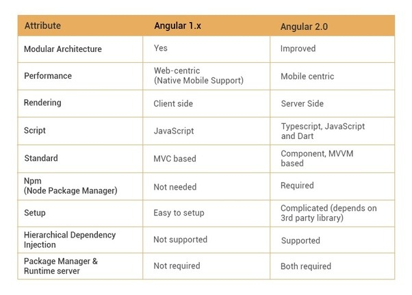

Angular 2.0 shows a substantial change in the structure as compared to version 1.0. The architecture of Angular v1 is based on MVC whereas the architecture of Angular v2 is based on service/controller. There is very less possibility to upgrade the Angular v1 to v2, mainly developers have to rewrite the entire application code.
Angular v1.0 use JavaScript to build the application while Angular v2.0 uses the Typescript to write the application. TypeScript is a superset of JavaScript which helps to build more robust and structured code. Dart can be used by developers along with TypeScript in version 2.0
Angular 1.x was made for responsive and two way binding app. There was no mobile support. Although there are other libraries which make angular 1.x run on mobile. Angular 2.0 is made keeping in mind mobile oriented architecture. There are libraries i.e. Native script which help mobile Angular 2 mobile development fast.
The controller concept which was present in Angular v1.0 is eliminated in Angular v2.0. Angular v2.0 has changed to component based UI. This helps a developer to divide the applications in terms of components with desired features and enable to call required UI. These have helped to improve the flexibility and reusability as compared to Angular v1.0
With Angular v1.0 developing the search engine friendly Single Page Applications was the major difficulty. But this bottleneck was eliminated in Angular v2.0. AngularJS development services build SEO friendly Single Page Applications by rendering the HTML at the server side.
Angular 2 is not using $scope anymore to glue view and controller. This is one of the biggest problem when you did coding in Angular 1 and then want to try Angular 2 for the project.
There were bunch of directives in Angular 1. Angular 2 has only Component, Decorator and Template directive. JSON based Route config is more easy to edit.